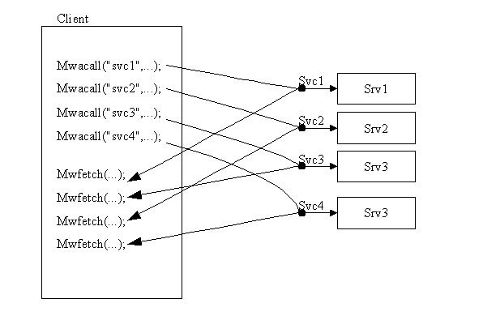
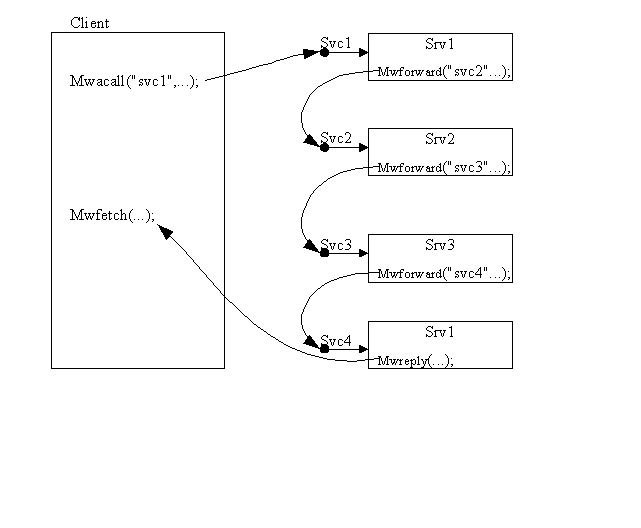

Parallelism
There are two types of parallelism you can do with MidWay, fan-out and pipeline.
In fan-out you call multiple services simultaneously. This is asynchronous request/response. In order do this, we use the mwacall() to issue the request and mwfetch() to get the response later.

In
order to do pipelineing you use mwforward()
in the server to pass the request onto another service.

The
first service may do something like user authentication, the second
format checking, the third the actual DB interface, and the third
formatting of reply. Since we don't have implemented transaction
support in MidWay, the first and last could be transaction begin, and
commit.
Top